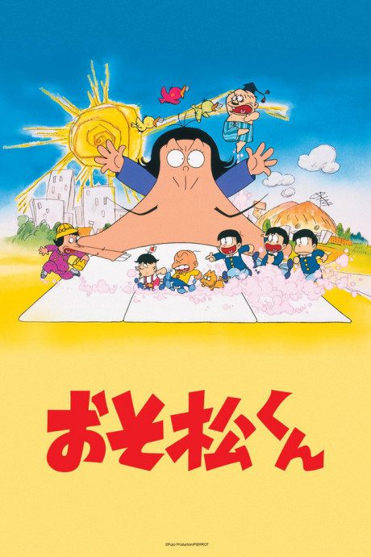
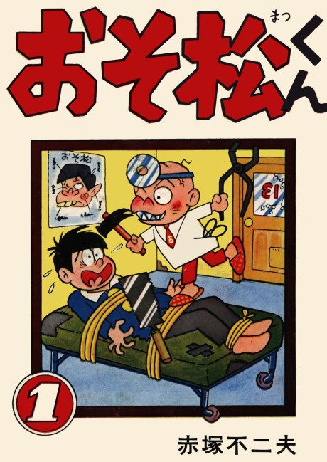

Osomatsu-kun (1988)
おそ松くん (1988)
The anime takes the story to Unclear.
6.4AniList score
—Animeter, no votes yet
174episodes, 5 seasons
5 seasons, 174 episodes
In airing order. Episode numbers on this site count straight through every season, so season 2 starts at episode 87.
1
1988 · TV
Osomatsu-kun (1988)
Episodes1–8686 ep
2
2015 · TV
Mr. Osomatsu
Episodes87–11125 ep
3
2017 · TV
Mr. Osomatsu 2nd season
Episodes112–13625 ep
4
2020 · TV
Mr. Osomatsu 3rd season
Episodes137–16125 ep
5
2025 · TV
Mr. Osomatsu 4th season
Episodes162–17413 ep
Sources: AniList